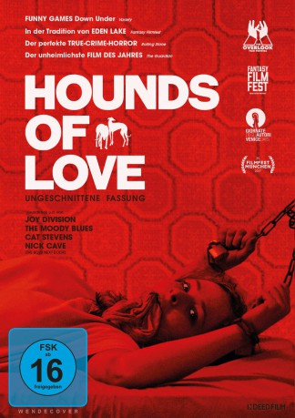

#7208 Hounds of Love
 
 IMDB-Wertung: 6.6 / 10
IMDB-Wertung: 6.6 / 10  Metascore: 0
Metascore: 0 
Teenagerin Vicki Maloney (Ashley Cummings) ist im suburbanen Perth im Jahr 1987 gerade dabei, sich von ihren Eltern abzunabeln. Zwar meinen es Vater Trevor (Damian de Montemas) und Mutter Maggie (Susie Porter) gut mit ihr, doch zurzeit sind die beiden Parteien einfach inkompatibel. Als Vicki sich eines Nachts davonschleicht, um eine Party zu besuchen, fällt sie jedoch dem Ehepaar White in die Hände. John (Stephen Curry) und Evelyn White (Emma Booth) haben inzwischen eine perfide Routine entwickelt, wenn es darum geht, Menschen zu entführen, zu foltern und zu töten. Als ihr nächstes Opfer haben sie Vicki auserkoren. Die merkt jedoch bald, dass sie möglicherweise noch eine Chance hat, lebend aus der Situation zu entkommen - denn die Beziehung der Whites steht auf wackligen Beinen und Vicki glaubt zu erkennen, wo sie ansetzen muss, um einen Keil zwischen Emily und John zu treiben...
Jahr: 2016
Dauer: 108 Minuten
FSK: 16
Land: Australien Studio: Gunpowder & SkyTonspuren: DTS - ,
Untertitel: Deutsch,
Auflösung: 1080p (1920x808) Größe: 5427 MB
Genre: Thriller, Horror, Drama, Krimi, Mystery
Regisseur: Ben Young
Drehbuch: Ben Young
Soundtrack:
Darsteller:
 Emma Booth als Evelyn White
Emma Booth als Evelyn White- Ashleigh Cummings als Vicki Maloney
- Stephen Curry als John White
- Susie Porter als Maggie
- Damian de Montemas als Trevor
 Harrison Gilbertson als Jason
Harrison Gilbertson als Jason- Liam Graham als Pete
- Lisa Bennet als Gabby Donovan
- Alla Hand als Girl in class
- Maggie Meyer als Netball Coach
- Fletcher Humphrys als Gary
- Steve Turner als Troy
- Holly Jones als Miss Martin
- Michael Muntz als Sergeant Mathews
- Marko Jovanovic als Sergeant Henderson
- Eileen Colocott als Elderly Neighbour
- Kingsley Judd als Shop Attendant
- St John Cowcher als Bogan in Car
Datei: X:\2016(G-M)\Hounds of Love (2016, FSK16, 1920x808).mkv seit 09.10.2017
Festplatte: HD 2016(A-Z)
 Es gibt insgesamt 164 Filme in der Gruppe '2016(G-M)'
Es gibt insgesamt 164 Filme in der Gruppe '2016(G-M)'